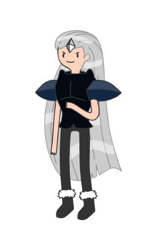

In the Land of Ooo, Princess Bubblegum has been kidnapped. No one knows who took her or where she was taken. Amid the panic in the Candy Kingdom, a group of characters unite to uncover her whereabouts, armed with only one clue: whoever abducted her also stole a powerful artifact—the book known as the "Enchiridion." In the wrong hands, this tome could jeopardize the entire multiverse.
The Enchiridion is a legendary book within the Adventure Time universe, initially introduced as a guide for heroes. However, it possesses profound magical properties. When specific gems are inserted into designated slots within the book, it can open portals to various dimensions of the multiverse. This capability makes it an object of immense power and danger if misused.
Given the Enchiridion's potential to access and possibly disrupt the multiverse, its theft alongside Princess Bubblegum's abduction raises significant concerns. The group seeking to rescue her must not only find the princess but also prevent the misuse of the Enchiridion to safeguard the balance of the multiverse.
Imagine a robust and imposing figure clad in armor crafted from crystallized candies that shimmer under Ooo's sunlight. His shield is a massive, hardened peppermint candy, adorned with spiraling red and white stripes. Wielding a sword forged from black licorice, it emits a gentle glow, hinting at its hidden power. His eyes are resolute, and his expression exudes unwavering courage.
| Stats | Points |
|---|---|
| Health | 100 |
| Magic | 0 |
| Defense | Shield with 50 defense |
| Weapon | Sword dealing 10 attack damage |
| Special Ability | Taunt – Draws enemy attacks towards himself, safeguarding allies. |
This character serves as the group's shield, always at the forefront to protect his companions. His Taunt ability is crucial for keeping enemies focused on him, allowing allies to attack safely. Though he lacks magical abilities, his strength and defense make him a formidable adversary.
